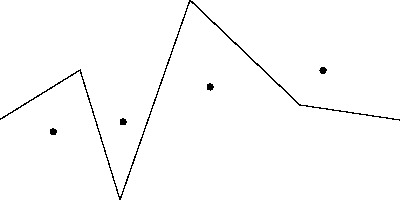

|
| Contest: USAICO10-3A GOLD Division |
|
| Your proctor is Rob Kolstad |
|
|
ANALYSIS MODE
Submit solutions for your own enjoyment.
**********************************************************************
GOLD PROBLEMS
**********************************************************************
Three problems numbered 1 through 3
**********************************************************************
Problem 1: Fertilizer Assignment [Brian Dean, 2010]
Farmer John has N fields (1 <= N <= 250,000) conveniently numbered
1..N. Each of these fields needs to be fertilized this month; field
j requires f_j units of fertilizer.
The county has two fertilizer factories that, every month, produce
A and B (1 <= A+B <= 20,000,000) units of fertilizer, respectively.
Conveniently, f_1 + f_2 + ... + f_n = A+B.
Transporting fertilizer to the fields has a cost that usually differs
The cost to provide fertilizer to field j from the factory 1 is
c_1j (1 <= c_1j <= 100), and the cost to provide fertilizer to field
j from factory two is c_2j (1 <= c_2j <= 100).
Please help FJ determine the minimum cost to provide enough fertilizer
to all of the fields.
PROBLEM NAME: fertilizer
INPUT FORMAT:
* Line 1: Three space-separated integers: N, A, and B
* Lines 2..N+1: Three space-separated integers describe field j's
needs and costs: f_j, c_1j, and c_2j
SAMPLE INPUT (file fertilizer.in):
5 19 39
9 5 1
2 4 1
5 2 1
33 6 1
9 7 1
INPUT DETAILS:
There are five fields, with fertilizer demands 9, 2, 5, 33, and 9,
respectively. The second fertilizer costs 1 for every single field, while
the first fertilizer costs varying amounts.
OUTPUT FORMAT:
* Line 1: A single integer that is the minimum cost to provide
fertilizer to all of the fields.
SAMPLE OUTPUT (file fertilizer.out):
120
OUTPUT DETAILS:
The second factory provides 9 units to field 5 and 30 units to field 4. The
first factory provides the remaining fertilizer.
**********************************************************************
Problem 2: The Search [Tomasz Kulczynski - POI, 2009]
Bessie has been kidnapped by Farmer John's evil twin brother, Farmer
Don! Now he must meet Farmer Don's challenge to determine how much
he will pay in ransom.
Farmer Don has hidden Bessie in one of the N (1 <= N <= 1,000,000,000)
conveniently numbered (1..N) stalls in his very large barn. When
Farmer John correctly guesses which stall Bessie is in, Farmer Don
will let Bessie go free.
Farmer John can only ask Farmer Don questions of the form "Is
Bessie's stall number greater than x?" or "Is Bessie's stall number
less than x?" FJ can choose the number x arbitrarily. Farmer Don
promises to answer such queries truthfully. However, there is a
cost associated with each question.
Every time Farmer Don answers "yes", FJ must pay Farmer Don a sum
of A (1 <= A <= 1,000) dollars; every time FD answers "no", FJ must
instead pay B (1 <= B <= 1,000) dollars.
Bessie is very much a material cow and will get offended if FJ ends
up paying more money than necessary. More precisely, if at any point
during the challenge it is possible to deduce that, regardless of
FD's answers from that point forward, FJ can guess Bessie's location
by spending no more than K dollars, then Bessie will decide not to
return to FJ if he spends more than that K dollars.
Help FJ win back Bessie!
NOTE: In this problem, you will interact with a grading program.
The grader will send you data via your program's standard input and
you must reply via standard output. It is recommended that you use
scanf and printf for this. You will always want to write
setbuf(stdout,0);
at the beginning of your program. Don't forget "#include <stdio.h>".
The grader will start by sending a single line containing the
integers N, A, and B, separated by spaces. Your program should read
this and then reply with a single line that is FJ's first query. A
query is of the form "G x" or "L x", where "G x" means that you are
asking if Bessie's stall number is greater than x and "L x" means
that you are asking if Bessie's stall number is less than x. FD's
response to the query will be a line with either a single "Y" or
"N", corresponding to yes or no. Once FD replies to FJ's first
query, you should output FJ's second query, and so on.
As soon as you have deduced Bessie's location, you should output
"A x", where x is Bessie's integer stall number.
SAMPLE INTERACTION:
Program Grader
------- ------
10 2 4
L 7
Y
G 3
Y
L 6
N
A 6
PROBLEM NAME: search
INPUT FORMAT:
* Lines 1..?: See problem statement.
SAMPLE INPUT (file search.in):
[See problem statement]
OUTPUT FORMAT:
* Lines 1..?: See problem statement.
SAMPLE OUTPUT (file search.out):
[See problem statement]
**********************************************************************
Problem 3: Rope Tightening [Brian Dean, 2010]
Farmer John's cows like to graze in a field with N (1 <= N <= 3,000)
grassy knolls conveniently numbered 1..N wherein knoll i has
coordinates (kx_i, ky_i) (-100,000 < kx_i < 100,000; -100,000 <
ky_i < 100,000).
The field is surrounded by fences on all sides, such that its
boundary is a rectangle with vertices (-100,000, -100,000), (-100,000,
100,000), (100,000, -100,000), and (100,000, 100,000).
An old, dilapidated fence runs through the middle of the field,
from coordinate (-100,000, 0) to coordinate (100,000, 0). This fence
is generally not very straight, but rather can be thought of as a
sequence of line segments that connect F (1 <= F <= 10000) fence
posts, conveniently numbered 1..F.
Fence post i has coordinates (fx_i, fy_i) (-100,000 <= fx_i <=
100,000; -100,000 <= fy_i <= 100,000). Fence post 1 is at (-100,000,
0), and fence post F is at (100,000, 0). FJ notes that the x-coordinates
of successive fence posts are strictly increasing and that no knoll
is located on the path of fence (either at a fence post or on any
line segment between two successive fence posts).
FJ would like to replace his old fence with a new one. However, the cows
are very used to their grassy knolls and will be upset if the new fence
separates the knolls in a different way from the old fence. More precisely,
if there are two knolls that were previously on the same side of the fence,
and they are now on different sides of the fence (or vice versa), the cows
will be upset. Additionally, due to zoning restrictions, the fence posts of
the new fence must also have increasing x-coordinates. Nevertheless, FJ
would like to use as little wood for the fence as possible, so he wants to
minimize the length of the fence. Help FJ by finding the minimum length of
a fence that nevertheless satisfies the cows' preferences and the zoning
restriction.
For example, consider the following field with 4 knolls and 6 fence
posts:

The shortest fence that FJ can build is indicated in the image
below. It cannot be any shorter without changing which side of the
fence the 2nd and 3rd knolls are on, which would violate the cows'
preferences:
 PROBLEM NAME: tighten
INPUT FORMAT:
* Line 1: Two space-separated integers: N and F
* Lines 2..N+1: Line i+1 describes the coordinates of knoll i with two
space-separated integers: kx_i and ky_i
* Lines N+2..N+F+1: Line N+i+1 gives the two space-separated integer
coordinates of fence post i: fx_i and fy_i
SAMPLE INPUT (file tighten.in):
4 6
-75000 -7500
-40000 5000
3500 10000
60000 23200
-100000 0
-60000 25000
-40000 -40000
-5000 60000
50000 7500
100000 0
OUTPUT FORMAT:
A single floating-point number: the length of the shortest fence. Your
answer must be within 1.0e-5 of the actual answer.
SAMPLE OUTPUT (file tighten.out):
201011.1374427501
**********************************************************************
PROBLEM NAME: tighten
INPUT FORMAT:
* Line 1: Two space-separated integers: N and F
* Lines 2..N+1: Line i+1 describes the coordinates of knoll i with two
space-separated integers: kx_i and ky_i
* Lines N+2..N+F+1: Line N+i+1 gives the two space-separated integer
coordinates of fence post i: fx_i and fy_i
SAMPLE INPUT (file tighten.in):
4 6
-75000 -7500
-40000 5000
3500 10000
60000 23200
-100000 0
-60000 25000
-40000 -40000
-5000 60000
50000 7500
100000 0
OUTPUT FORMAT:
A single floating-point number: the length of the shortest fence. Your
answer must be within 1.0e-5 of the actual answer.
SAMPLE OUTPUT (file tighten.out):
201011.1374427501
**********************************************************************